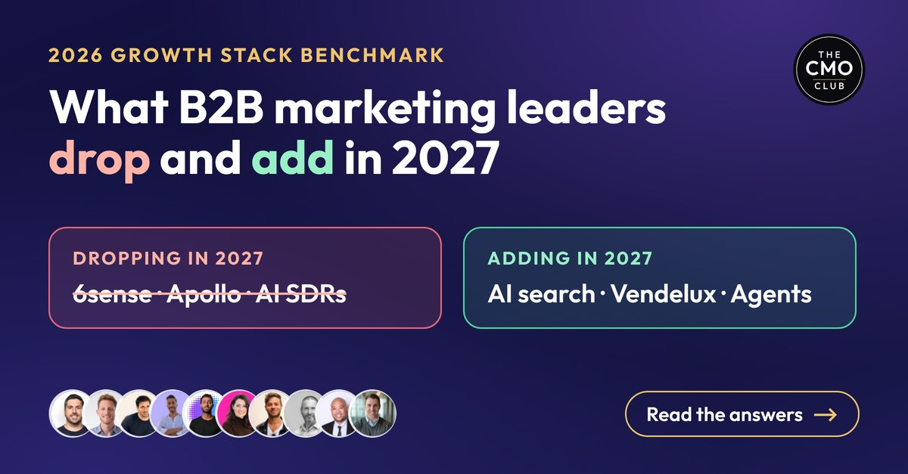

B2B marketing tech stack 2026

Six B2B tech marketing leaders just told the CMO Club what's really in their stack. Not the stack on their vendor case study. The one they pay for, the channel that brings the meetings, and the tools they're cutting next year.
Their answers look nothing like the "50 must-have AI tools" lists flooding LinkedIn.
The 6 marketing leaders in this round
| Name | Role | Stage |
|---|---|---|
| Jeremiah Glodoveza | CMO, Proof | Series C+ |
| Alejandra Barav | VP Marketing, ThetaRay | Series C+ |
| Charlie Riley | VP of Marketing, InsurePay | Series B |
| Shahar Dumai | VP Marketing, Cydome | Series A |
| Rodrigo Fernandez Baon | CMO, NeuralTrust | Seed |
| Tzvi Vaknin | Fractional CMO | Bootstrapped |
Tools 5 of 6 leaders run: HubSpot, Sales Navigator, LinkedIn Ads
Three tools showed up almost everywhere. HubSpot, LinkedIn Sales Navigator and LinkedIn Ads each sit in 5 of the 6 stacks.
Right behind them: custom Claude or GPT workflows (4 of 6) and Google Ads (4 of 6). Apollo and Salesforce show up in 3.
The boring core won. Then everyone bolts their own AI workflows on top of it.
Top channel: inbound content and events, not cold outbound
- Inbound and content: 3 leaders (NeuralTrust, InsurePay, Cydome)
- Events and webinars: 2 leaders (Proof, ThetaRay)
- Warm intros and community: 1 leader
Nobody named cold outbound as the channel that brings the most pipeline. Outbound is in almost every stack. It just isn't the thing doing the heavy lifting.
Tools they're dropping in 2027
- 6sense (Proof)
- Apollo and Apollo Sequences (NeuralTrust)
- Artisan and AiSDR (InsurePay)
- Google Ads (ThetaRay)
- Clay, Demandbase and HubSpot CMS (Tzvi Vaknin)
Look at that list. Intent data, a data vendor, two AI SDRs and a paid search budget. The expensive "pipeline machines" are the first to go.
Tools they're adding in 2027
- Profound, for AI search visibility (Proof)
- Vendelux, for event-led pipeline (InsurePay)
- Higgsfield AI, for AI video (NeuralTrust)
- A first AI SDR test (ThetaRay)
- More custom Claude and Codex agents (Tzvi Vaknin)
AI SDRs: one team runs on it, one team churned
Tzvi Vaknin says AI SDRs are core to his pipeline, across email, LinkedIn and AI voice calls. Three leaders say AI SDRs book some meetings alongside humans. InsurePay tried and churned. ThetaRay hasn't tried yet and plans to test in 2027.
So the AI SDR isn't dead and it isn't magic. It works when a human still owns the message.
What moved revenue in 2026, in their own words
The stack that moved revenue the most was AI search. Nobody budgeted for it. We just made Proof the answer every agent gives.Jeremiah Glodoveza, CMO, Proof
Zero gimmicks: real press, customer love, live rooms worldwide, and our team on LinkedIn.Alejandra Barav, VP Marketing, ThetaRay
Answering the questions prospects had by using sales call data to inform the content strategy.Charlie Riley, VP of Marketing, InsurePay
Original, non-AI content and research. The tech stack is a distribution channel for our secret sauce.Shahar Dumai, VP Marketing, Cydome
Agentic workflows and visibility tools, letting us scale content, outreach and impressions while optimizing every asset for GEO.Rodrigo Fernandez Baon, CMO, NeuralTrust
Buy credible basics that plug into your agents. Build the workflows only your team knows. Keep your data portable and a human in the loop.Tzvi Vaknin, Fractional CMO
What this means for a Seed to Series B startup
Your competitor can buy every tool on this page tomorrow. So the tools aren't your edge.
The edge is the play on top of them. Proof made itself the answer inside AI search. ThetaRay had local ambassadors post on LinkedIn right after every event. InsurePay turned sales call recordings into content. None of those plays came in a box.
Two of these teams spend under $1K a month on tools. One spends over $15K. Both kinds made the list.
Buy the basics. Then spend your hours on the one play nobody in your category is running yet.
Get your stack on the Top 50 list
The CMO Club is collecting the stacks of the Top 50 B2B Tech Marketing Shapers. It takes 3 minutes, and you get your own slide in the LinkedIn carousel.
Want this kind of stack built for your team? Book a call →